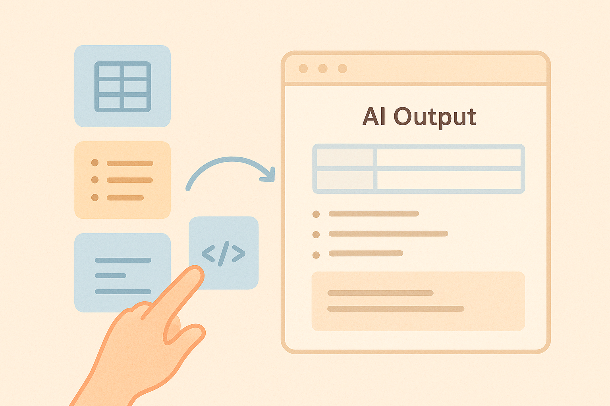
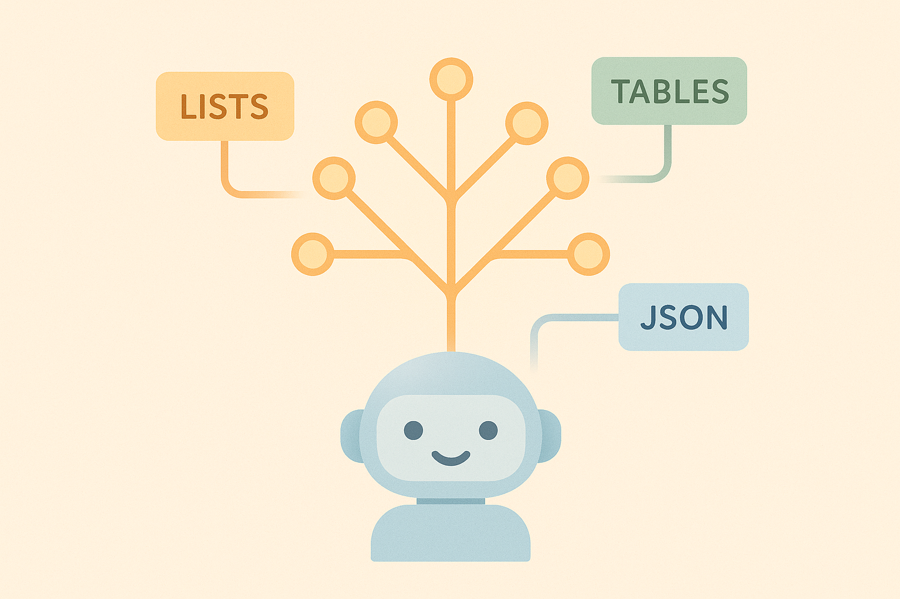

11 Regeln! Grammatik, Struktur und Format steuern
Wenn du in den letzten Kapiteln gelernt hast, wie KI denkt, wie sie Beispiele nutzt, wie sie Aufgaben zerlegt und wie du sie zum Nachdenken bringst, kommt jetzt ein neuer Superpower-Moment:
👉 Du kannst der KI beibringen, in exakt dem Format zu antworten, das du brauchst.Das ist einer der wichtigsten Schritte auf dem Weg von „Ich probiere mal irgendwas“ zu „Ich arbeite wie ein Profi mit generativer KI“. Denn KI-Modelle lieben es, sich kreativ auszutoben – aber manchmal brauchst du Ordnung. Struktur. Klarheit. Format. Du willst nicht:
- einen chaotischen Text,
- unübersichtliche Absätze,
- fehlende Listen,
- oder einen Codeblock, den man nicht ausführen kann.
Du willst stattdessen:
- Tabellen, die sofort nutzbar sind,
- Bullet-Points, die übersichtlich sind,
- klare Strukturen, die du weiterverarbeiten kannst,
- Code, der sauber formatiert ist,
- Pläne, die du direkt übernehmen kannst – zum Beispiel einen Budgetplaner.
Und genau das kannst du der KI beibringen. Mit Regeln.
In diesem Kapitel erfährst du, wie du der KI sagst, wie sie antworten soll – nicht nur was.
11.1 Warum Formatregeln so mächtig sind
Stell dir vor:
Du willst für die Schule, Uni oder Ausbildung eine übersichtliche Zusammenfassung. Du brauchst kurze Bullet-Points, keine langen Fließtexte. Aber die KI liefert dir trotzdem wieder eine halbe Seite Fließtext – nett geschrieben, aber unbrauchbar.
Warum passiert das? Weil das Modell nicht weiß, dass du das Format als Priorität meinst. Erst wenn du klare Regeln gibst – und diese Regeln als „muss“ formulierst –, versteht die KI:
👉 „Diese Struktur ist wichtiger als mein kreativer Schreibstil.“Wenn du gelernt hast, Formatregeln richtig anzuwenden, kannst du:
- Hausaufgaben schneller sortieren
- Lernzettel sauber ausgeben lassen
- Social-Media-Posts automatisch strukturieren
- Recherche-Infos gut lesbar ordnen
- Code automatisch in funktionsfähige Blöcke packen
- Daten in Tabellen ausgeben lassen
- Budgetpläne oder To-Do-Listen generieren
- Geschäfts- oder Schulprojekte ausformatiert erstellen
Struktur ist Macht. Und jetzt bekommst du sie.

11.2 Tabellen verstehen und sauber erzeugen
Tabellen sind einer der am häufigsten unterschätzten KI-Skills. Warum? Weil Tabellen dir helfen, aus Chaos sofort Ordnung zu machen.
Die wichtigsten Einsatzbereiche für Tabellen-Prompts:
- Lernübersichten
- Vergleichstabellen (z. B. Autoren, historische Ereignisse, mathematische Begriffe)
- Budgettabellen
- Social-Media-Planer
- Projektplanung
- Coding-Funktionstabellen
- Vokabellisten
- Zeitpläne
👉 Wie du Tabellen korrekt anforderst
Viele schreiben:
„Mach mir eine Tabelle über die Ursachen des Klimawandels.“
Und die KI gibt … irgendetwas. Mal mit Markdown, mal als Textliste, mal komisch eingerückt.
Der Profi-Prompt sagt:
„Erstelle eine Tabelle im Markdown-Format mit 3 Spalten: Ursache, Kurzbeschreibung, Beispiel. Keine zusätzlichen Erklärungen.“
Warum ist der so gut?
- Er definiert Format („Markdown“).
- Er definiert Spaltenanzahl.
- Er definiert Spaltennamen.
- Er verbietet „extra Gerede“.
👉 Mini-Beispiel: Schulprojekt Geschichte
Prompt:
„Bitte gib mir eine Tabelle im Markdown-Format mit 4 Spalten: Epoche | Zeitraum | wichtigste Erfindung | Einfluss auf die Gesellschaft. Keine Einleitung, keine Erklärung, nur die Tabelle.“
Ergebnis: Meist perfekt nutzbar – für Präsentationen, Lernzettel oder Schulaufgaben.
11.3 Bullet-Points: Das unterschätzte Ordnungswerkzeug
👉 Bullet-Points sind ein Machtwerkzeug.Sie zwingen die KI zu:
- Kürze
- Klarheit
- logischer Struktur
- Übersichtlichkeit
Wenn du lernst, sie bewusst einzusetzen, sparst du Stunden. Stunden beim Lesen, Stunden beim Präsentieren, Stunden beim Lernen.
👉 Wie du perfekte Bullet-Point-Antworten erzwingst
Beispiel-Profi-Prompt:
„Erstelle eine Antwort ausschließlich in Bullet-Points.
Verwende pro Punkt maximal 12 Wörter.
Mach maximal 8 Bullet-Points.
Keine Einleitung, kein Fazit.“
Das funktioniert besonders gut bei:
- Lernzusammenfassungen
- Social-Media-Skripten
- Präsentationspunkten
- Rechercheergebnissen
- Argumentationslisten
- Essay-Gliederungen
Wenn du dazu noch Gruppierungen verlangst, wird’s noch besser:
„Erstelle drei Gruppen von Bullet-Points: Grundlagen, Anwendungen, Beispiele.“
Das ist exakt die Art von Struktur, nach der Lehrer, Dozenten und Chefs suchen.
11.4 Code-Strukturen: Einfach erklärt – aber extrem nützlich
Auch wenn du kein Programmierer oder keine Programmiererin bist, solltest du verstehen:
👉 KI liebt Code – und Code zwingt KI zur Struktur.Du kannst Codeblöcke nutzen für:
- mathematische Schritte
- logische Listen
- Datenformate
- JSON-Strukturen (super in Projekten!)
- To-Do-Lists
- Mindmaps
- Projektpläne
- Social-Media-Templates
- Website-Entwürfe
- Arbeitsabläufe
Der Trick ist:
Was im Codeblock steht, nimmt die KI ernster.
👉 Beispiel: Strukturierter Lernplan
Prompt:
Gib den folgenden Lernplan als JSON aus:
{
"Thema": "",
"Tagesplan": [],
"Ziele": []
}
Keine Erklärung, nur gültiges JSON.Das Ergebnis ist perfekt weiterverwendbar – in Apps, Notizen, Tools, Projekten.
👉 Beispiel: Mindmap als Code
Erstelle eine Mindmap im Markdown-Tree-Format:
- Hauptthema
- Unterpunkt 1
- Beispiel A
- Unterpunkt 2
- Beispiel BKI liefert: eine klare Baumstruktur. Du kannst sie exportieren, ausbauen, visualisieren.

11.5 Ein Budget-Planer mit KI erstellen
Einer der nützlichsten Praxisfälle für Formatsteuerung ist ein Budget-Planer.
Warum?
Weil Budgets aus:
- Tabellen
- Bullet-Points
- klaren Kategorien
- Regeln bestehen — also genau aus allem, was KI gut strukturiert.
👉 Beispiel-Prompt für einen Monatsbudgetplaner
„Erstelle einen Monatsbudget-Planer in einer sauberen Markdown-Tabelle mit folgenden Spalten: Kategorie, Fixkosten, variable Kosten, Sparziel, Kommentar.
Danach gib mir 5 Bullet-Points mit Tipps, aber KEINEN Fließtext.“
Oder noch systematischer:
„Erstelle mir ein Budget-System in drei Teilen:
- Tabelle (Markdown) mit 6 Kategorien
- Kurze Regeln als Bullet-Points
- Ein JSON-Datenmodell zur Weiterverarbeitung
Kein Zusatztext.“
Damit hast du ein vollständiges System. Du kannst es sofort in Notion, Excel, Google Sheets oder ein Planungs-Tool übernehmen.
11.6 Die Wichtigkeit klarer Output-Formate
Es gibt zwei Arten von KI-Nutzern:
❌ Typ A: „Mach einfach irgendwas“-Nutzer
Sie bekommen:
- mal lange Texte
- mal kurze Listen
- mal Chaos
- mal Genialität
- oft Frust
✅ Typ B: Format-Master
Sie sagen der KI exakt:
- wie viele Absätze
- welche Struktur
- ob Listen
- ob Tabellen
- ob JSON
- ob Codeblock
- ob kurze Sätze
- ob fester Rahmen
Und sie bekommen genau das, was sie brauchen.
Immer.
Stabil.
Wiederholbar.
Wenn du Formatregeln beherrschst, wirst du feststellen:
👉 Die KI arbeitet plötzlich wie eine professionelle Assistenz, nicht wie ein kreativer Chaot.Und genau das ist der Schritt vom Hobby-Nutzer zum Power-User.
11.7 Die goldene Regel: „Formatiere deine Antwort wie folgt …“
Das ist die mächtigste Format-Anweisung überhaupt.
Wenn du nicht sicher bist, wie du der KI sagen sollst, was du willst, dann nutze:
„Formatiere deine Antwort wie folgt:“
(und dann schreibe dein gewünschtes Format darunter)
Zum Beispiel:
„Formatiere deine Antwort wie folgt:
- Ein Satz als Zusammenfassung
- Eine Tabelle mit 3 Spalten
- 5 Bullet-Points mit konkreten Tipps
- Ein JSON-Block mit den wichtigsten Daten“
Die KI folgt dieser Struktur fast fehlerfrei.
11.8 Mini-Übung: Formate wie ein Profi festlegen
👉 Übung 1 – Lernzettel strukturieren
Formuliere:
„Formatiere deine Antwort in drei Teilen:
(1) 5 Bullet-Points mit den Grundlagen
(2) Eine Tabelle mit 4 Spalten
(3) Ein JSON mit Lernzielen.“
👉 Übung 2 – Social-Media-Skript
Formuliere:
„Erstelle ein 30-Sekunden-Skript für TikTok ausschließlich in Bullet-Points.“
👉 Übung 3 – Code-Struktur üben
Formuliere:
„Gib mir einen Plan in folgendem JSON-Format …“
Wenn du diese Übungen beherrschst, kannst du fast jede Aufgabe mit der KI meistern.
In den nächsten Abschnitten lernst du, wie du praktische Formatvorlagen, Regelsets und Mini-Workflows entwickelst, damit KI-Arbeit noch effizienter und stabiler wird.
Im ersten Teil von Kapitel 11 hast du gelernt, wie wichtig klare Formatvorgaben für gute KI-Ergebnisse sind: Tabellen, Bullet-Points, klare Absätze, Code-Strukturen und sogar strukturiertes Budget-Planning lassen sich mit erstaunlicher Präzision steuern, wenn du weißt, wie du deine Anweisungen formulierst.
Jetzt gehen wir einen Schritt weiter: Du lernst, wie du die KI dazu bringst, dauerhaft und zuverlässig an deiner gewünschten Struktur festzuhalten — selbst dann, wenn die Aufgabe komplex wird oder mehrere Anforderungen gleichzeitig erfüllt werden müssen.
Wenn du dieses Kapitel abgeschlossen hast, wirst du in der Lage sein, die KI zu präzisen, wiederholbaren und qualitativ hochwertigen Ausgaben zu führen. Egal ob Präsentation, Hausarbeit, Content-Plan oder Lernzettel: Struktur ist die Superpower.
11.9 Warum KI Struktur verliert – und wie du das verhinderst
Vielleicht ist dir das schon passiert:
Du hast die KI gebeten, eine klare Tabelle zu erzeugen, aber plötzlich steht unter der Tabelle noch ein Satz wie „Here is your table!“. Oder du willst fünf Bullet Points und bekommst acht. Oder du willst eine Liste nummeriert haben — aber die KI beginnt bei 0 oder vergisst die Nummerierung nach Punkt 4.
Warum passiert das?
Weil generative KI grundsätzlich frei denkt und produziert. Sie ist nicht darauf optimiert, streng formale Regeln einzuhalten, sondern darauf, „plausible“ und „hilfreiche“ Texte zu generieren.
Du kannst aber gegensteuern — mit drei Methoden:
👉 1. Struktur zuerst, Inhalt danach.
Gib immer zuerst die gewünschte Form, dann den Inhalt an.
👉 2. Explizite Formatregeln.
Sag exakt, was du willst:
„Benutze exakt fünf Bullet-Points.
Keine zusätzlichen Kommentare.
Starte mit Überschrift, dann Tabelle, dann Zusammenfassung.“
👉 3. Die KI an die Regeln erinnern.
Wenn du an einem langen Projekt arbeitest, ist es völlig legitim, die KI mit einem Satz wie „Bitte bleib weiterhin bei der vorgegebenen Struktur.“ zu stabilisieren.
11.10 Struktur-Schablonen: Dein geheimer Baukasten
Eine der mächtigsten Techniken im Prompt Engineering ist die Nutzung von Struktur-Schablonen (englisch oft „templates“ genannt). Das bedeutet: Du gibst der KI eine feste Struktur zum Ausfüllen.
Beispiel:
Schablone:
Titel:
Ziel:
Wichtige Begriffe:
Schritte:
Beispiel:
Mini-Übung:Wenn du diese Vorlage vorgibst, folgen die meisten KI-Systeme ihr überaus zuverlässig — deutlich besser als ohne Vorlage.
👉 Warum funktionieren Schablonen so gut?
Weil KI Muster liebt. Wenn du ein eindeutiges Muster vorgibst, benutzt sie es.
Du kannst Schablonen für so ziemlich alles erstellen:
- Lernzettel
- Zusammenfassungen
- Social-Media-Posts
- Projektpläne
- Code-Snippets
- Budget-Planung
- Wochenziele
- Charakter-Designs
- Schulaufsätze
Schablonen sind wie regelbasierte Leitplanken, die die KI sicher führen.
11.11 Beispiel: Wie du die KI zum perfekten Lernzettel zwingst
Ein typischer Fehler bei Lernzetteln: Die KI beginnt zu schwafeln. Oder sie überlädt den Text. Oder sie springt zwischen Stichpunkten und Sätzen.
Hier eine optimale Struktur:
Prompt-Vorlage (ideal für Prüfungsvorbereitung):
Erstelle einen Lernzettel mit der folgenden Struktur:
- Kurze Zusammenfassung (max. 3 Sätze)
- Wichtigste Begriffe: Bullet-Point-Liste mit 5–7 Begriffen und jeweils 1 Satz Erklärung
- Die 3 wichtigsten Zusammenhänge (jeweils 2 Sätze)
- Mini-Quiz: 5 Verständnisfragen ohne Antworten
Keine weiteren Absätze oder Extras. Halte dich strikt an die Struktur.
Warum funktioniert das so gut?
- Die KI weiß genau, wie der Output aussehen muss.
- Du kontrollierst die Länge.
- Du bestimmst die Anzahl der Elemente.
- Du minimierst Halluzinationen, weil du den Rahmen eng hältst.
Wenn die KI abweicht, ist die Lösung simpel:
„Bitte halte dich an die Struktur. Wiederhole nur das Format und fülle es korrekt aus.“
11.12 Kreativer Output braucht trotzdem klare Regeln
Viele junge Nutzer glauben:
„Wenn ich kreativ arbeiten will, darf ich der KI nicht zu viele Regeln geben, sonst wird alles langweilig.“
Aber das Gegenteil ist wahr.
Kreativität braucht einen Rahmen.
Ein Beispiel:
Du willst eine Social-Media-Idee. Wenn du einfach sagst:
„Gib mir Social-Media-Ideen.“
… bekommst du ein Durcheinander.
Mit Struktur aber:
„Gib mir 5 TikTok-Ideen für Schüler, die lernen wollen.
Jedes Element enthält:
– Hook (max. 10 Wörter)
– Erklärung (max. 1 Satz)
– Beispiel-Formulierung für das Video (max. 1 Satz)“
Jetzt liefert die KI präzise und kreative Ergebnisse.
👉 Regeln ermöglichen Kreativität.11.13 Wie du die KI an harte Regeln gewöhnst
Wenn du möchtest, dass die KI in all deinen Projekten sauber strukturiert arbeitet, kannst du eine Art „Arbeitsweise“ etablieren.
Beispiel:
„Ab jetzt: Immer klar strukturierter Output. Verwende Überschriften und Bullet-Points. Keine unnötigen Kommentare.“
Oder:
„Wenn du dir bei Daten unsicher bist, markiere den Punkt mit [Unsicher] statt Vermutungen zu machen.“
Solche Regeln führen dazu, dass die KI dauerhaft disziplinierter antwortet.
11.14 Der KI beibringen, Fehler selbst zu finden
Du kannst Formatregeln mit Selbstkontrolle kombinieren:
„Analysiere deinen Output und überprüfe, ob du alle Formatregeln eingehalten hast.
Wenn nicht, korrigiere dich selbst.“
Diese Technik wird oft Self-Verification genannt — und sie funktioniert erstaunlich gut.
Beispiel:
„Gib erst deine Antwort aus.
Dann überprüfe sie in einer zweiten Ausgabe unter der Überschrift ›Formatcheck‹ und verbessere sie.“
Dies ist eine Art Mini-Programmierung über Prompting — und unglaublich nützlich für saubere Ergebnisse.
11.15 Struktur in Kombination mit Code: Der einfache Einstieg
Auch wenn du nicht programmieren kannst, kannst du mit Struktur-Prompts Code-ähnliche Ausgaben erzeugen.
Beispiel:
Einfache JSON-Formatierung
„Gib die Informationen im folgenden JSON-Format aus:
{
‘Begriff’: ‘…’,
‘Definition’: ‘…’,
‘Beispiel’: ‘…’
}
Keine weiteren Kommentare.“
Oder YAML, Markdown oder Tabellen in GitHub-Stil.
Warum lohnt sich das?
Weil:
- Du bringst die KI dazu, Abläufe strukturiert zu denken.
- Du kannst die Ergebnisse später leichter weiterverarbeiten.
- Du lernst eine extrem wertvolle Grundkompetenz für die Zukunft.
11.16 Struktur als Denkwerkzeug: Dein Vorteil gegenüber anderen
Es stimmt:
Die meisten Menschen tippen einfach drauflos.
Nur wenige nutzen klare Formatregeln.
Wenn du lernst, gute Output-Strukturen zu definieren:
- entsteht weniger Chaos
- bekommst du schneller verwertbare Ergebnisse
- kannst du große Projekte planbar machen
- kannst du Inhalte leicht weitergeben (z. B. an Freunde oder Mitschüler)
- sparst du massiv Zeit
Und jetzt kommt der entscheidende Punkt:
👉 Gute Struktur macht dich zum Regisseur — nicht zum Zuschauer.Du bestimmst, wie gedacht wird.
Die KI folgt.
11.17 Mini-Praxisblock: Drei Struktur-Prompts, die du sofort nutzen kannst
👉 1. Strukturierter Lernzettel
„Erstelle einen Lernzettel in dieser Struktur:
– Kurze Einführung (max. 3 Sätze)
– Die 5 wichtigsten Begriffe (je 1 Satz)
– 3 Schlüsselzusammenhänge (je 2 Sätze)
– Mini-Quiz (5 Fragen)
Keine weiteren Elemente.“
👉 2. Strukturierter Social-Media-Post
„Gib mir einen TikTok-Post mit folgender Struktur:
– Hook (max. 8 Wörter)
– Inhalt (2 Bullet-Points)
– Call to Action (max. 1 Satz)
Keine Emojis, keine zusätzlichen Kommentare.“
👉 3. Strukturierter Projektplan
„Erstelle einen Projektplan mit folgender Struktur:
Abschnitt 1: Ziel
Abschnitt 2: Schritte (nummeriert)
Abschnitt 3: Risiken
Abschnitt 4: Zeitplan
Keine weiteren Absätze.“
Diese drei Vorlagen wirst du immer wieder benutzen.
11.18 Der wichtigste Gedanke dieses Kapitels
👉 Struktur ist kein Hindernis, sondern eine Superkraft.Je klarer du Formate, Regeln und Layouts vorgibst, desto stärker kannst du KI steuern. Wenn du die Form kontrollierst, kontrollierst du automatisch auch die Qualität. Und genau das unterscheidet Anfänger von echten Prompt-Profis.
11.19 Ausblick auf Kapitel 12
Im nächsten Kapitel wechseln wir von strukturierten Formaten direkt in deinen Alltag als Lernende(r): Schule, Studium, Prüfungen, Hausaufgaben – überall kann KI dir Zeit sparen und Verständnis vertiefen. Wir schauen uns an, wie du mit wenigen Prompts Lernzettel erstellst, dich auf Tests vorbereitest, komplexe Texte zusammenfasst und KI als verständliche, geduldige Nachhilfe nutzt.
In Kapitel 12 erfährst du:
👉 wie KI dir beim Lernen wirklich Arbeit abnimmt, ohne dich abhängig zu machen,
👉 wie du bessere Notizen, Zusammenfassungen und Erklärungen bekommst,
👉 wie du Referate, Recherche und Quellen sauber mit KI vorbereitest,
👉 und wie du dir damit ein Lernsystem baust, das dich im Alltag stärker macht.Weiter geht’s – hin zu deinem persönlichen Lern-Turbo! 🚀